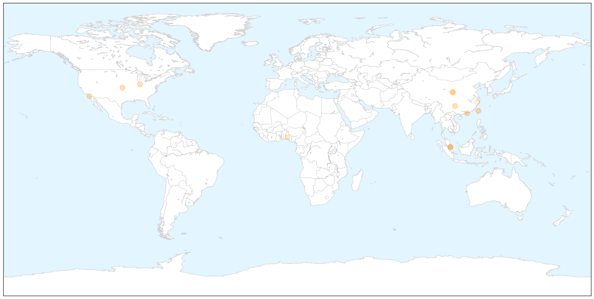
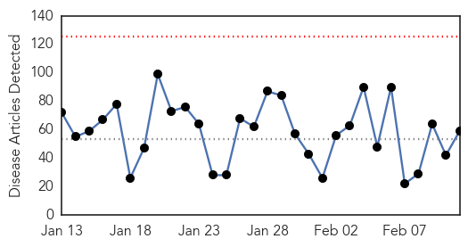
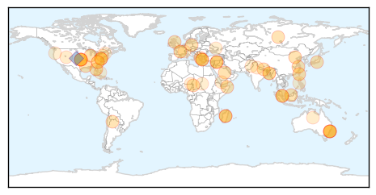

Influenza
30-Day Web Trend
0 alerts, 0 warnings

30-Day Twitter Trend
1 alerts, 0 warnings

Article Locations

X

Article Confidences

Top Articles:
- 1.000
- Flu Scan for Feb 11, 2015
- 0.999
- :: Influenza cases reach unusual high number this season
- 0.998
- Flu Outbreak in Hong Kong Causes 157 Deaths
- 0.994
- CDC calls for the public to take flu prevention steps as influenza spreads
- 0.987
- 6 things you need to know about flu vaccination, Others news, Health News, AsiaOne YourHealth
- 0.982
- 145 deaths this year as deadly flu bug hits Hong Kong, Others news, Health News, AsiaOne YourHealth
- 0.978
- South Bend-Elkhart among top U.S. cities with flu
- 0.967
- Death Toll in Local Flu Season Rises to 43, with 14 in Last Week
- 0.894
- SGGP English Edition- Vietnam makes concerted efforts to prevent spread of H7N9 viru in border crossigns
- 0.831
- Man dies of bird flu in northwest Yunnan
- 0.763
- Osun, experts on sensitisation drive
- 0.507
- 21 human cases of H7N9 bird ...｜Society｜WCT
Top Tweets:
-
No tweets found for Feb 11, 2015
Unknown
30-Day Web Trend
0 alerts, 0 warnings

30-Day Twitter Trend
2 alerts, 0 warnings

Article Locations

Article Confidences

Top Articles:
- 0.984
- Flu may spread as successive cold fronts arrive in Taiwan
- 0.971
- Spread of plague slows in Madagascar, death toll at 71 - WHO
- 0.954
- Spread of plague slows in Madagascar, death toll at 71
- 0.929
- Chronic fatigue syndrome renamed and redefined
- 0.917
- Chicago Tribune
- 0.917
- Chicago Tribune
- 0.917
- Chicago Tribune
- 0.917
- Chicago Tribune
- 0.917
- Chicago Tribune
- 0.917
- Chicago Tribune
- 0.917
- Chicago Tribune
- 0.917
- Chicago Tribune
- 0.917
- Chicago Tribune
- 0.917
- Chicago Tribune
- 0.917
- Chicago Tribune
- 0.917
- Chicago Tribune
- 0.917
- Chicago Tribune
- 0.917
- Chicago Tribune
- 0.910
- The world windows to Thailand
- 0.905
- Tulane primate center probed after infections
- 0.896
- Boy suffers may need kidney transplant after contracting E.coli in Dorset
- 0.878
- Social stigma hinders bid to curb tuberculosis
- 0.866
- Obama says military force authorization formed from consulting Congress
- 0.866
- Magnitude 6.9 earthquake strikes Chile, close to Argentine border-USGS
- 0.866
- Ukraine's Poroshenko flies to Minsk for peace talks
- 0.866
- Chad army says kills 13 Boko Haram fighters in Nigeria
- 0.791
- More than 100 at Surrey Hills child care centre tested for TB
- 0.777
- Term ‘Chronic Fatigue’ Doesn’t Fully Explain Devastating Illness
- 0.761
- Antibiotics overuse leads to resistance
- 0.759
- Probe begins into Sylhet hospital deaths
- 0.757
- Chronic Fatigue Given New Name Along With Better Diagnosis
- 0.685
- NSW Health screening children and staff after child care worker is diagnosed with tuberculosis
- 0.670
- Probe begins after 32 deaths in Bangladesh hospital ucanews.com
- 0.626
- This Month, Dr. Darryl A. Field Encourages Improved Oral Health in Jacksonville, FL, in Honor of Gum Disease Awareness Month
- 0.619
- New Research for Battling Alzheimer's Disease
- 0.619
- Tuberculosis scare at Sydney childcare centre leads to testing of carers, kids
- 0.612
- Pittsburgh student with tuberculosis discharged from hospital
- 0.601
- Sick childcare worker triggers TB scare
- 0.599
- Northern Territory Government expands quarantine area for Cucumber Green Mottle Mosaic Virus
- 0.585
- Adviser promises action on health reforms roadmap
- 0.564
- Over 300 school students hospitalised after consuming medicines in Tripura
- 0.555
- PhilHealth, DOH and UNICEF launch pioneering primary health care package to benefit 11 million children - Philippines
- 0.551
- N. Carolina man charged with murder of Muslim students
- 0.551
- US comedian Jon Stewart to leave ‘The Daily Show’
- 0.551
- ‘Last-ditch’ Ukraine peace talks last through the night
- 0.551
- Foreign fighters flocking to Syria at ‘unprecedented rate’
- 0.551
- Russian war planes stoke Western fears amid Ukraine crisis
- 0.551
- Live: Strauss-Kahn testifies for a second day in French pimping trial
- 0.551
- France to close embassy in Yemen, urges nationals to leave
- 0.551
- French right-wing youth leader outed as illegal immigrant
Showing top 50 articles...
Top Tweets:
- 0.605
- RT: Reminder of the MERS scape. An infected human has visited or occurred in 23 countries; 89% of cases in SaudiArabia http://t…
- 0.520
- RT: Updated MERS risk assessment projects more cases & more exported cases. 971 total to date 356 at least deaths ht…
- 0.500
- RT: Filipino nurse from Saudi Arabia tests positive for MERS virus http://t.co/GDsdhtzAq7